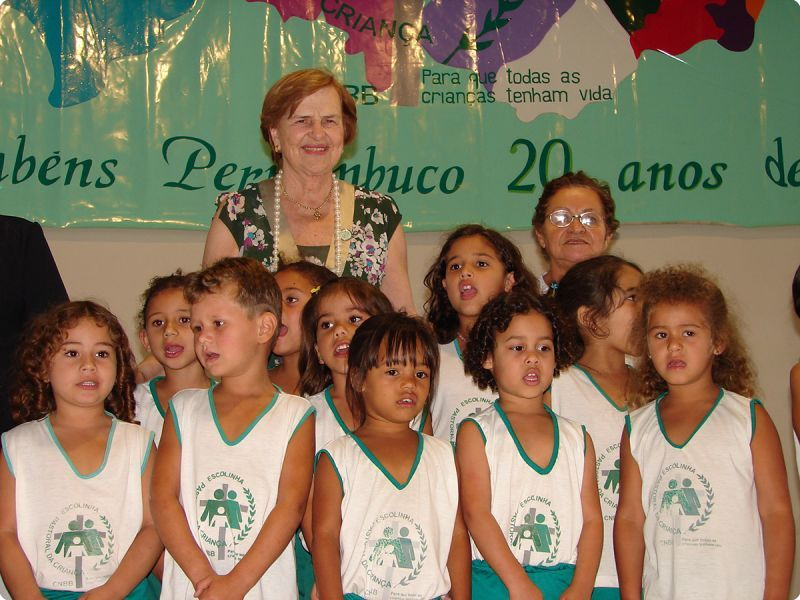

Biografia de Zilda Arns
Zilda Arns foi uma médica pediatra brasileira nascida em Forquilhinha, Santa Catarina, em 25 de agosto de 1934, e faleceu tragicamente no terremoto no Haiti em 12 de janeiro de 2010. Ela dedicou sua vida à promoção da saúde infantil e materna, sendo uma das fundadoras e coordenadora internacional da Pastoral da Criança.
Zilda Arns formou-se em Medicina pela Universidade Federal do Paraná. Em 1983, fundou a Pastoral da Criança, uma organização sem fins lucrativos vinculada à Conferência Nacional dos Bispos do Brasil (CNBB), com o objetivo de reduzir a mortalidade infantil e promover o desenvolvimento integral das crianças, especialmente as mais vulneráveis.
Durante o período em que viveu e trabalhou, o Brasil enfrentava desafios socioeconômicos significativos, incluindo altas taxas de pobreza e desigualdade, especialmente nas áreas rurais e periferias urbanas. Zilda Arns trabalhou incansavelmente para levar cuidados de saúde básicos para as comunidades mais necessitadas, utilizando recursos tecnológicos disponíveis na época para melhorar as condições de vida.
Principais Contribuições de Zilda Arns
Zilda Arns foi pioneira ao aplicar técnicas e conhecimentos médicos para alcançar populações carentes. Utilizou abordagens inovadoras e tecnológicas para criar sistemas de monitoramento de saúde em comunidades de baixa renda, promovendo a conscientização sobre nutrição, saúde materna e infantil, vacinação e higiene.
Dra. Zilda Arns Neumann recebeu o título de Cidadã Honorária de 11 estados e 37 municípios brasileiros, 19 prêmios (nacionais e internacionais) e dezenas de homenagens de governos, empresas, universidades e outras instituições, pelo trabalho realizado na Pastoral da Criança.
Quiz sobre Zilda Arns
Responda às perguntas sobre a vida e o trabalho de Zilda Arns.